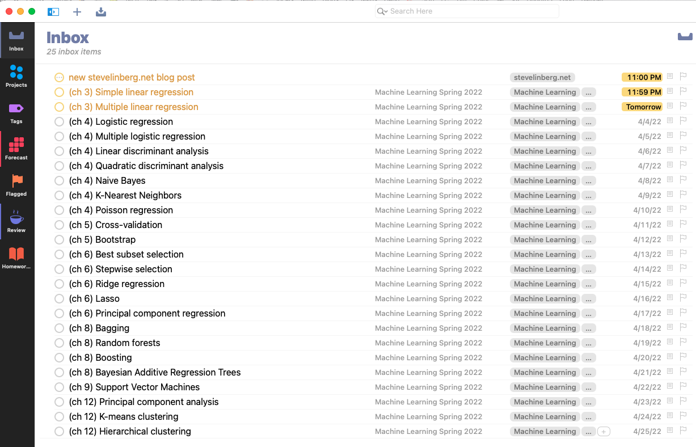

Quickie for importing tasks to OmniFocus 3
I’ve been an OmniFocus user since version 1.0.
Well, sort of. I used it a ton in version 1.0 and then eventually stopped. Then I used it again a ton when version 2 came out, and then eventually stopped. It worked well when I really forced myself to use it, but eventually I’d run out of gas, and it always bugged me a bit that I couldn’t get a handle on why. I read David Allen’s “Getting Things Done”, which it was inspired by, and it all made sense, but it still just had a lot of friction to keep using.
One of the problems, I now realize, was the notion of contexts - each to-do item could be assigned to one, and only one, context, like “online” or “supermarket” or “home”, describing the setting where a task could be done. The problem was that there were many tasks that could be done in multiple contexts, but no way to mark them as such. One user I talked with on one of the forums explained that the way to think about it was that I myself could be in multiple simultaneous contexts, like “home” and “online”, and that tasks that matched either of those would appear. It sort of made sense, but it still never felt natural and I eventually dropped it again.
I checked it out again in version 3, and the problem has been solved: contexts are gone, replaced by the much more versatile and familiar concept of tags. Tags can be freely defined, and any item can have as many tags as you want. So now I’m using it again and finding it much easier to get along with.
(I also really appreciate that there is the option to just pay for it straight up, though they also offer the odious subscription-based pricing that everybody except developers hates. There is upgrade pricing from prior versions that makes it more affordable. They also offer educational pricing, so between my educational pricing and upgrade discount, OF3 went from $99 to about $38. Sold.)
It’s full of really nice little interface touches that are almost invisible but that make life very pleasant. One of them is the ability to import tasks in TaskPaper format, which is very straightforward. I needed to add a list of 24 assignments (sigh) to my inbox, one per day for the next 24 days. I had them typed out, and with the help of a few emacs macros added due dates and tags, using the following format:
- task description @tags(tag1, tag2) @due(YYYY-MM-DD HH:MM)So my full list was:
- (ch 3) Simple linear regression @tags(Machine Learning, Homework) @due(2022-04-02 23:59)
- (ch 3) Multiple linear regression @tags(Machine Learning, Homework) @due(2022-04-03 23:59)
- (ch 4) Logistic regression @tags(Machine Learning, Homework) @due(2022-04-04 23:59)
- (ch 4) Multiple logistic regression @tags(Machine Learning, Homework) @due(2022-04-05 23:59)
- (ch 4) Linear discriminant analysis @tags(Machine Learning, Homework) @due(2022-04-06 23:59)
- (ch 4) Quadratic discriminant analysis @tags(Machine Learning, Homework) @due(2022-04-07 23:59)
- (ch 4) Naive Bayes @tags(Machine Learning, Homework) @due(2022-04-08 23:59)
- (ch 4) K-Nearest Neighbors @tags(Machine Learning, Homework) @due(2022-04-09 23:59)
- (ch 4) Poisson regression @tags(Machine Learning, Homework) @due(2022-04-10 23:59)
- (ch 5) Cross-validation @tags(Machine Learning, Homework) @due(2022-04-11 23:59)
- (ch 5) Bootstrap @tags(Machine Learning, Homework) @due(2022-04-12 23:59)
- (ch 6) Best subset selection @tags(Machine Learning, Homework) @due(2022-04-13 23:59)
- (ch 6) Stepwise selection @tags(Machine Learning, Homework) @due(2022-04-14 23:59)
- (ch 6) Ridge regression @tags(Machine Learning, Homework) @due(2022-04-15 23:59)
- (ch 6) Lasso @tags(Machine Learning, Homework) @due(2022-04-16 23:59)
- (ch 6) Principal component regression @tags(Machine Learning, Homework) @due(2022-04-17 23:59)
- (ch 8) Bagging @tags(Machine Learning, Homework) @due(2022-04-18 23:59)
- (ch 8) Random forests @tags(Machine Learning, Homework) @due(2022-04-19 23:59)
- (ch 8) Boosting @tags(Machine Learning, Homework) @due(2022-04-20 23:59)
- (ch 8) Bayesian Additive Regression Trees @tags(Machine Learning, Homework) @due(2022-04-21 23:59)
- (ch 9) Support Vector Machines @tags(Machine Learning, Homework) @due(2022-04-22 23:59)
- (ch 12) Principal component analysis @tags(Machine Learning, Homework) @due(2022-04-23 23:59)
- (ch 12) K-means clustering @tags(Machine Learning, Homework) @due(2022-04-24 23:59)
- (ch 12) Hierarchical clustering @tags(Machine Learning, Homework) @due(2022-04-25 23:59)Copy the entire list, and then just paste into the inbox, and voilà:

Now the problem is I have to actually do all of those things. (But at least I can check off the top item for the new blog post.)
Reuse
Citation
@online{linberg2022,
author = {Steve Linberg},
title = {Quickie for Importing Tasks to {OmniFocus} 3},
date = {2022-04-02},
url = {https://slinberg.net/posts/2022-04-02-quickie-for-importing-tasks-to-omnifocus-3},
langid = {en}
}